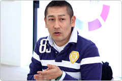
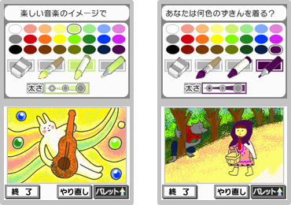
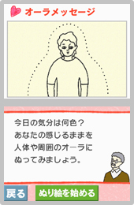
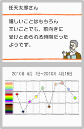
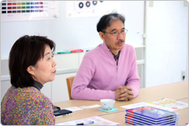
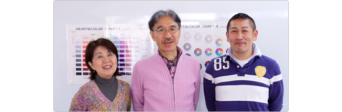

──
特にどのような点に注意して制作されたんでしょうか？
大谷
今回の『DSココロぬりえ』の中では、実際にパレットと画用紙を使って絵を描く場合 と同じように、色を選ぶ際に一度絵から目をはなすという感覚をあえて取り入れています。絵を描くツールという意味では、少し不便なんです。しかし、さきほど末永先生がおっしゃいましたように、少しアナログというか、昔の感覚を呼び覚ますような手ざわり感を大事にしました。

末永
デジタルというか、社会が直線的になっているところで、それでは測れない曲線的な部分ですね。外に外にといろんな情報に目を向けなければいけなくなっている状況で、24色のパレットから自分はどの色を選びたいのかという、自分の心に目を向ける一瞬の時間を作れるというのがポイントなんです。
江崎
私もそうですが、大人だと「自由に描いていい」と言われると固まっちゃうというか、なかなかすぐに描けないんですよね。ぬり絵だと、形を描くのが苦手でも気軽に楽しめるんじゃないかと思います。20年くらい前からぬり絵の本を出版していまして、現在までに100種類くらいの絵柄を作ってきましたが、こういう気持ちの方には、こういう絵柄が好まれるだろうという蓄積が、今回の『DSココロぬりえ』で活かすことができたと思います。また、パレットの仕組みと同時に、画材も水彩とクレヨンとサインペンの3種類から選べるのも特徴になっています。やはり水彩でふわっとぬるのと、サインペンでくっきりぬるのとでは、心理的効果も違いますので。

──
「自分発見」の結果は、画材の種類も関係があるんですか？
末永
おっしゃる通り、色彩だけでなく、選んだ画材も心理テストの対象になっています。これも私たちが調査をしてきたことが反映されています。
大谷
普段あまり絵を描かないという方はもちろん、絵に関わりが深い方でも、ぬり絵をぬるというのは新鮮でしょうね。純粋に色をぬるってこうなんだ、という感覚を味わっていただけるんじゃないかなと思います。
──
自分の周囲にオーラをぬるような絵柄がありますが。
末永
まずひとつは、さきほどみなさんにもやっていただいたように、自分の精神や身体がいい状態になっているか、それともネガティブな状態になっているか、ということが出やすいのです。それから、自分の外側の環境に対してどう感じているか、特に人間関係が色によってハッキリ出やすくなってくるんですね。
大谷
オーラぬり絵は最初から出てきますし、違う絵柄でそのあとも出てきます。また、DSiのカメラで自分を撮影して、そのまわりをぬるというのもあります。

──
ぬり終わったあと、画面に自分がぬった色がそれぞれ丸く集まってフワフワと浮くアニメーションは？
末永
ぬった色の量によって丸の大きさが変わるんですが、それがそのまま自分の心の中に占めている感情の配分を示しているわけです。喜びの感情が強い日なのか、なんとなくちょっと沈んでいるのか。たとえば青系統が多くて落ち込んでいるなと思ったら、今日は元気を出してみようとか、自分の心の状態を知るという意味での効果があると思います。
──
あと、「自分発見」の診断が出たあとに、「ココロぬり絵」を描いてリフレッシュするという流れも、『DSココロぬりえ』の特徴ですよね。
末永
そうですね。単に「今日は調子が悪いな」で終わるんじゃなく、セラピー効果があるぬり絵ができます。ちょっとした処方箋みたいなものがついているわけです。
大谷
DSiならではの付加価値として、ぬったあとの絵が動くアニメーションを入れています。見るだけで楽しかったり、ちょっと落ち着いた気持ちになっていただければと思っています。がんばることが目的ではないので毎日遊んで欲しいですが、疲れた時やホッとしたい時にも立ち上げてみて欲しいです。
末永
アニメーションは画期的だと思います。ぬり絵の本はぬってしまえば終わりなので、そこで止まっちゃうんです。しかし、そこから展開がある。変わっていけるんだということですね。絵が動くことで、心も動く。そういう作用はこの『DSココロぬりえ』で、はじめてできたんじゃないかなと思います。自分が描いたものが動くと、クリエイターになった、主人公になったという感じも持てますしね。
江崎
やはり動くと楽しいですよね。女性の方だと、自分がぬった絵が動くんだよというだけでも面白そうと反応していただけていますし。ぬっている最中にも音楽が流れて楽しいですし。
大谷
ちなみに「自分発見」では、自分の気持ちに率直にぬっていただきたいので、あえて音楽は入れていません。「ココロぬり絵」ではぬり絵に相乗効果を与えるような音楽を入れています。
──
「今日の色えらび」では、毎日選んだ色が色彩バイオリズムとして表示されますね。
末永
女性だと健康管理のために体温を測ったりしますが、なかなか心の体温は見えないものです。グラフ化されたものを見ることによって、フィードバックの効果も期待できます。
大谷
ハート＆カラーさんでも毎日の気分を色に例えて、その色を毎日記録していくということをされていて、流れがわかって面白いなと思って入れました。
江崎
記録して残しておかないと忘れてしまうものですし、あの頃はこんな感じだったんだというのが結構よくわかるんです。大谷さんもおっしゃったように、うちの講座の生徒さんにもやってもらっていたもので、長く続けるとその人なりのバイオリズムが出てくるんですね。

末永
人間は潜在的に何でもバランスを取ろうとするんです。寒いと震えて体温を上げたり、暑いと汗をかいて体温を下げたりしますよね。そうした無意識に起こるサインに気づいて、服を重ね着したり脱いだりといった調整が可能ですが、精神面においてはそういったサインがなかなか表に出ません。そこで、気分を色として表すことで、自分の中で起こっている変化を自覚できるのではないかと思います。
──
ちなみに『DSココロぬりえ』の企画のきっかけは？
大谷
当初は曼陀羅をぬるゲームということで考えていましたが、単に模様をぬるだけでは面白くないなと。そんな中で末永先生とお会いました。絶対に否定をしない、必ず肯定をしてアドバイスをするという考え方に共感しまして、一緒にこの企画をまとめていきましょうと。
末永
私たちも過去にパソコン向けのソフトなどは出していたんですが、やはりDSiだからこそ実現できたという部分がたくさんあります。こちらにとってもやりたいと思っていてもできなかったことがあったり、色彩心理学の蓄積もあったところでの出会いでしたので、タイミングも良かったかなと思います。
江崎
私たちやアトリエにいらっしゃる方々もそうですが、あまりゲームになじみがないということもありまして、ここで行う実際のぬり絵体験のライブ感を出したかったんですね。一番お願いしたのは、できるだけゆったり進められるようにしてくださいということでした。このゲームの目的から考えても、リラックスや癒し、セラピーということですし。ゲームについて知らないがゆえに、開発会社のみなさんに結構わがままな注文をさせていただいたかもしれません（笑）。

大谷
末永先生のやっていらっしゃる色彩心理学は相手の立場になって考える、われわれもお客さまのことを第一に考える、という部分に似たところを感じていまして、ゲームを一緒に作る上でもプラスの効果があったんじゃないかなと思います。
末永
私たちにとっても、当たり前になっていることでもあるんですよね。相手の振る舞いには必ず何か理由があるだろうと。それをくみ取って解決するというのがカウンセリングの基本というか、理由抜きにあなたはこうですよというのでは決めつけになっちゃうんです。そこには当然、善悪も出てきちゃう。それだとアドバイスを受けた方は自分の問題を考えられなくなるんです。良い悪いはなしで、一緒に理由を考えていきましょうと。そういう部分が共有できたのは、このゲームを作り上げる上で一番大事な要素だったんじゃないかなと思います。ゲームの内容と、私たちの関わり方が一致していたという。
江崎
ゲーム内の診断結果のメッセージは、開発会社さんで作られたものを監修するのではなく、私たちハート＆カラーで考えたものを使っていただきました。実際のカウンセリングそのままの要領で、ちょっと長めですがやさしく説明をしています。少しゆったりとしているので、ゲームっぽくないかもしれませんね。
末永
このゲームでは「間」がたくさんありますが、私たちの生活では、この「間」を持つということも難しくなっています。最初はちょっと遅いなと思うかもしれないんですが、慣れてくると心地よくなってくるんじゃないかなと。基本的に勝ち負けや評価ではなく、表現した人を肯定するということは一貫しています。どういう色を出してもいいんだという風に感じて、楽しんでいただければと思います。
──
ありがとうございました。

←前のページ／page1／page2／page3／page4／page5／page6／次のページ→